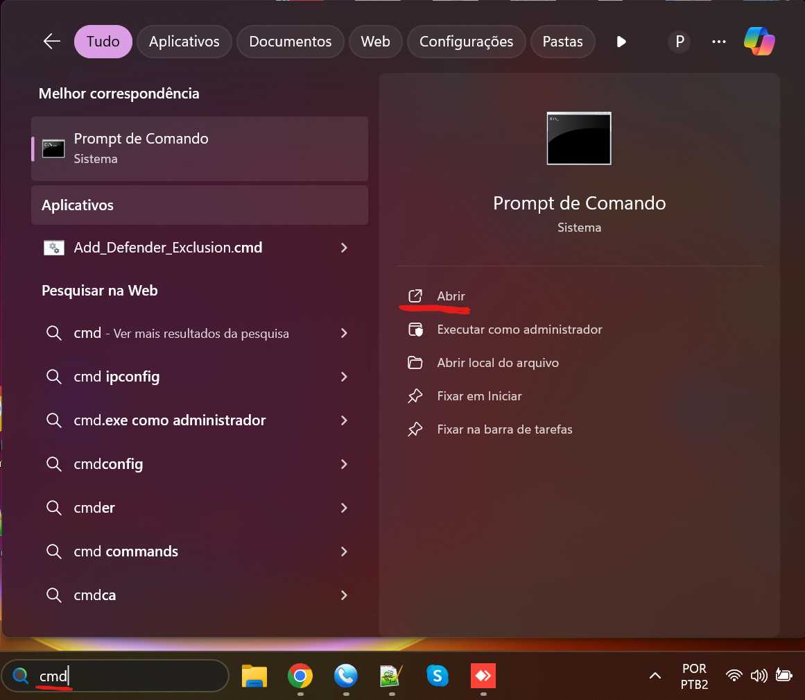
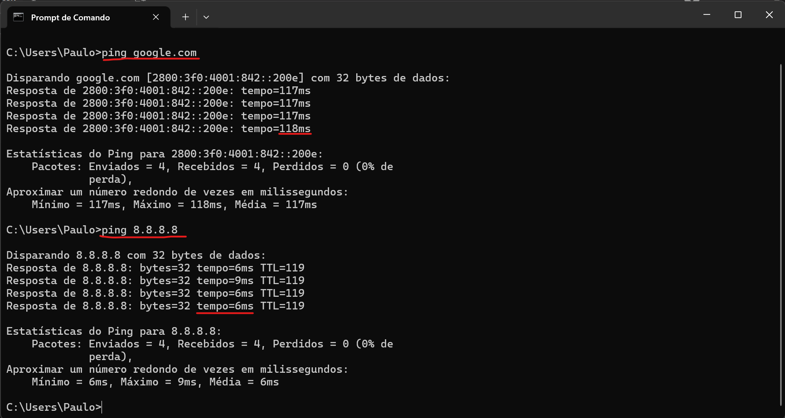
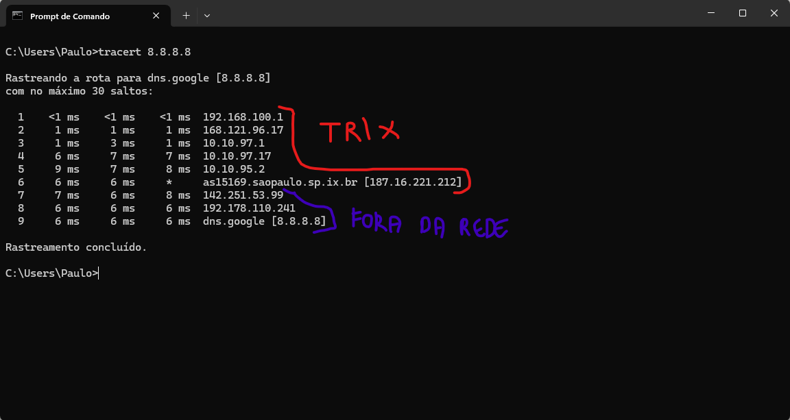

Ping e Tracert - CAT | TrixNet
Oque é os comandos de Ping e Tracert ?
Os comandos ping e tracert são ferramentas de diagnóstico de rede usadas para testar conectividade e identificar problemas na comunicação entre dispositivos.
🔹 ping → Verifica se um host está acessível na rede e mede a latência (tempo de resposta).
🔹 tracert (Traceroute) → Mostra a rota que os pacotes percorrem até um destino, útil para identificar onde há lentidão ou falhas na conexão.
Ambos são usados no Prompt de Comando (cmd no Windows) para testar conexões com servidores, sites ou dispositivos na rede. 🚀
Como usar PING ?
1. Abra o Prompt de Comando (cmd no Windows).
Clicando no botão Windows (bandeira) e digitando CMD.
2. Basta digitar ping + o IP ou Host que desejar pingar.
3. vai ser apresentado a seguinte maneira:
Resposta de(IP do serviço em IPv4 ou IPv6) (Tamanho em bytes) (Tempo de resposta) (Tempo de vida do pacote antes de ser descartado)
Como usar Tracert ?
2. Basta digitar o tracert + IP do serviço
3. Na leitura vai levar como base 1, 2, 3... Número do salto na rota.
4. MS é tempo de resposta em milissegundos. Indica a latência entre o seu PC e cada roteador.
5. E o IP é IP do roteador pelo qual o pacote passou. Se mostrar * * *, o roteador pode estar bloqueando resposta.